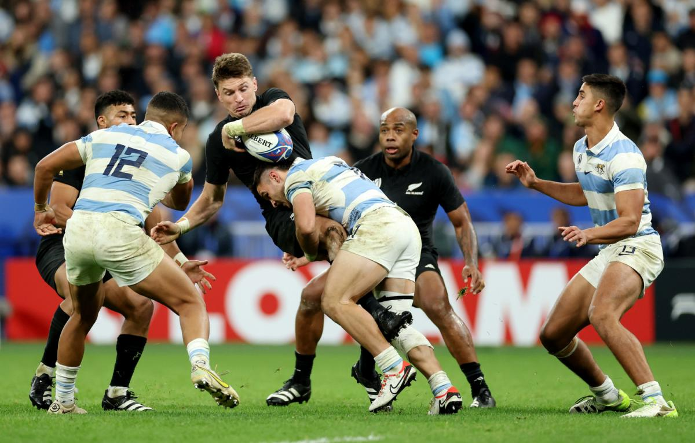
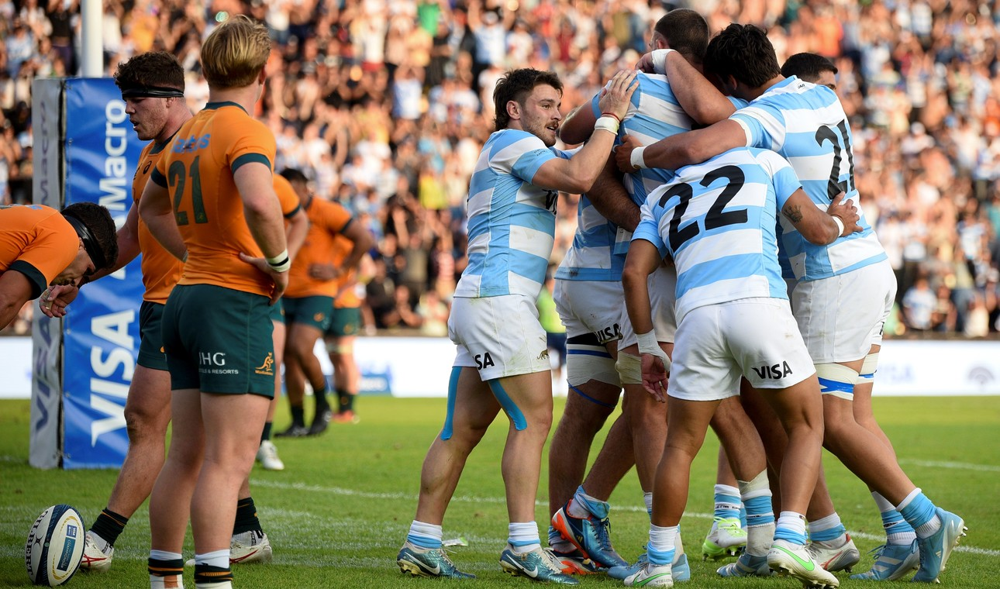
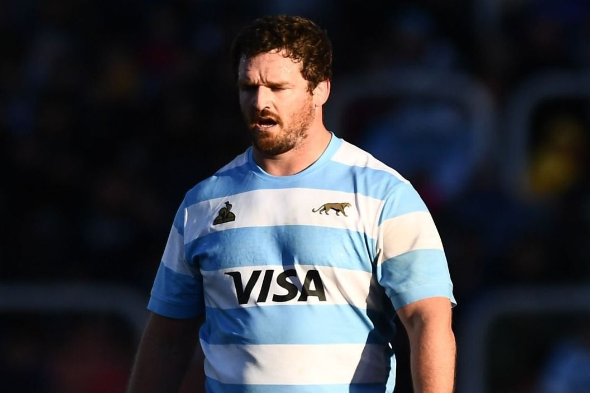
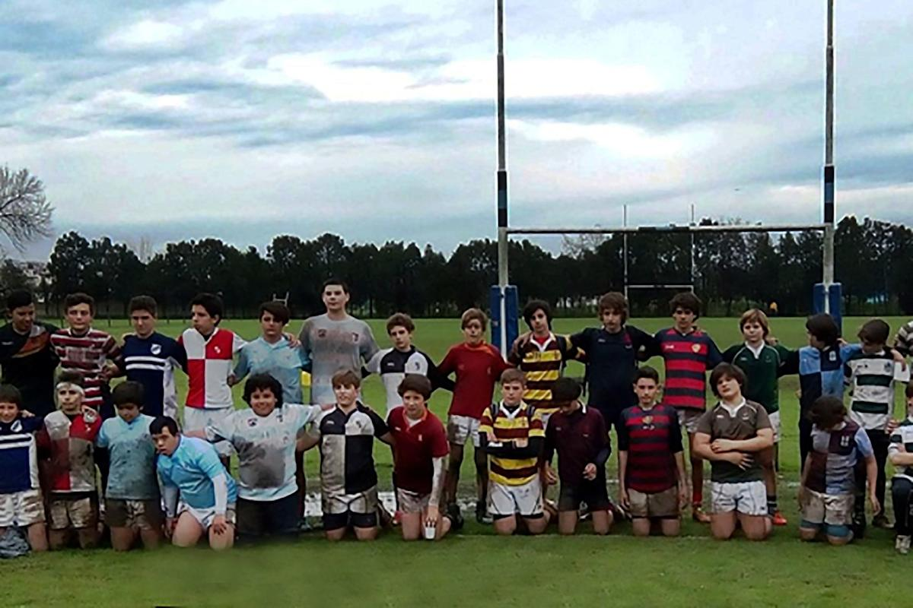

Los Pumas lograron una victoria impresionante frente a Inglaterra en su casa, con un marcador ajustado y emocionante. El partido se disputó en el icónico estadio de Twickenham, y la selección argentina mostró garra y estrategia para doblegar al conjunto local.
El crecimiento del rugby argentino en cifras

En la última década, el rugby argentino ha experimentado un crecimiento exponencial, no solo en la cantidad de clubes y jugadores federados, sino también en la profesionalización del deporte. Este desarrollo ha permitido a Los Pumas competir de igual a igual con potencias como Nueva Zelanda y Sudáfrica.
Los Pumas y el Rugby Championship 2025

La nueva edición del torneo más exigente del hemisferio sur ya comenzó, y Los Pumas debutaron frente a Australia. El equipo mostró gran solidez defensiva y un ataque efectivo, con tries clave y una estrategia que sorprendió al rival. Se espera una actuación destacada en los partidos siguientes.
Entrevista exclusiva con Julián Montoya

El capitán de Los Pumas, Julián Montoya, compartió sus pensamientos sobre el liderazgo en el equipo, la preparación para el mundial y los valores que transmiten a las nuevas generaciones. "Ser Puma es un honor y una responsabilidad que va más allá del campo de juego", afirmó.
Los valores del rugby en la formación juvenil

El rugby es más que un deporte: es una escuela de vida. A través del respeto, la disciplina, el trabajo en equipo y la humildad, miles de jóvenes en Argentina están encontrando en el rugby una herramienta para el desarrollo integral. Entrevistamos a entrenadores y educadores que lideran este proceso.